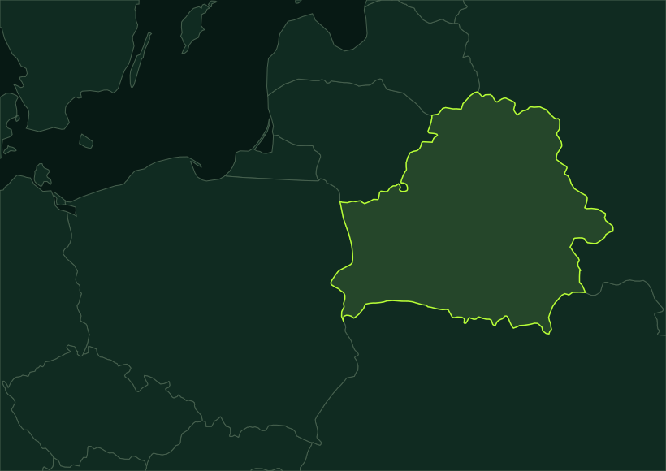

MAPA · 5 mapped years · 26 chronology stages · EN / БЕЛ
Belarusian lands. Changing states.
Which states governed these lands — and when were they divided? Keep Belarus in view and follow the political transitions.
01 · Belarusian lands through time
Which states were these lands part of?
The modern Belarus reference stays fixed while source-based political divisions change inside it. Start with the Polish–Soviet division in 1938.
Loading source geometry…
White outline: present-day Belarus, held constant as a comparison window — not a historical state border.
Check a city in this year
Approximate regional reconstructions, not survey boundaries. Only five selected years have displayed map data; context-only chronology stages do not invent intermediate borders.
How these historical maps were made — and what is missing
Geometry: André Ourednik and contributors’ Historical Basemaps, an openly licensed, work-in-progress dataset designed for continental and regional views. We intersected five selected source files with a constant modern Belarus reference; no dividing lines were drawn by eye. The original MAPA’s 63 drawings are not used.
The maps represent political regions, not the borders of a timeless Belarusian nation. The Soviet layers resolve country-level affiliation, not internal Belarusian SSR borders. A fixed modern Belarus reference is always visible for orientation.
Missing: the medieval principalities, the full sequence of partitions, BNR territorial claims, and internal BSSR boundary changes. Several candidate source years failed our basic place checks and were excluded. The 1500 and 1800 maps were excluded after historical checks. Retained polygons still require specialist review and are not legal or fine-grained boundary evidence.
Historical Basemaps · André Ourednik & contributors · GPL-3.0 · Reproducible clipping script · Review notes and provenance
Belarus in Maps · Historical, cultural and ethnic roots (Zsolt Bottlik) · How the original MAPA changed borders
Modified geometry is distributed under GPL-3.0, with its editable GeoJSON, source revision and license. Data is provided without warranty. The separate present-day reference comes from Natural Earth, public domain.
02 · Political chronology
One place. More than one political story.
Follow the changes that a handful of map snapshots cannot explain. State membership, a republic’s internal boundary, a declaration, and military occupation are different things.
Scope: lands inside the modern Belarus outline, not an unchanging ethnic or national territory. This is a selected chronology, not the original MAPA’s complete 63-state sequence.
02 · Places and documents
Follow the evidence behind an event.
No events match these filters.
Try a place, name, or year, or clear the filters to see the full selection.

Select a place marker. A number means several events share that place; select it again to move through them.
The map image could not load. The timeline and table still contain every event and source.
A question to explore
Select an event to read its context and source.
| Date | Event | Place | Source |
|---|
Export includes the visible records, both languages, approximate coordinates, source URLs, and date of this source review. It contains no original MAPA assets.
How to use
Start with one connection.
- Choose a date or search a place, person, or topic. Filters combine, so “Skaryna” plus “Language & print” gives two linked stops.
- Select an event to find its place and read a short note. Use the source button to examine the evidence in its original language.
- Switch to the table for a full list. Copy an event link for a reader, or download the filtered records and source URLs as JSON.
Keyboard: Tab reaches every control; ↑/↓ move between event buttons; Home/End select the first/last visible event. Enter or Space opens a place marker.
Original creators
A new map, with its origins visible.
The original Interactive Map of Belarusian History (MAPA) was created by Alexey Cherenkevich and his collaborators. This edition by Sergéy Ulyanov independently implements a map-and-timeline idea, adding accessible navigation, bilingual annotations, direct event links, and exports.
This is a selected set of ten entry points, not a comprehensive history or a recovery of the original MAPA database. Its historical border animations, illustrations, and code are not reproduced. The original creators have not endorsed this edition.
Original MAPA credits, as documented by its creator
- Alexey Cherenkevich
- Idea and design
- Yauhen Shpileuski
- Front-end
- Hanna Shyrayeva
- Texts and translations
- Viktar Yakunin
- Management
- Pavel Kedzich
- Advice